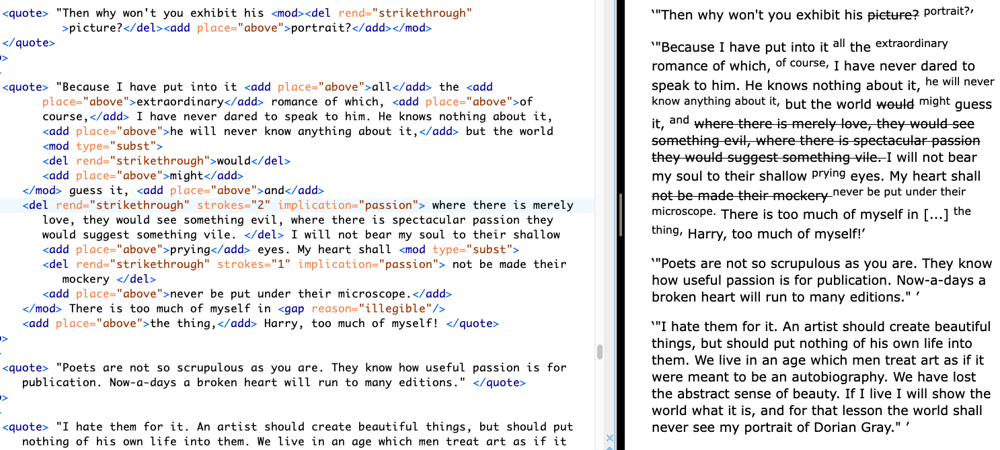

In the first scene of the novel, The Picture of Dorian Gray (1891), the painter Basil Hallward is at pains to explain to his friend Lord Henry Wotton why he cannot exhibit the portrait of the eponymous hero. Basil finally admits, "Where there is merely love, they would see something evil, where there is spectacular passion, they would suggest something vile" (Wilde, 1889–90, p. 21). This striking line, among many others that carry homoerotic innuendos, never appears in print. It is excised during Oscar Wilde's revision process, as part of a larger project of suppressing suggestions of homoeroticism between the three main characters of the story.
To interrogate Wilde’s revisionary practice, this chapter examines his treatment of the homoerotic elements across the first chapter of the manuscript of The Picture of Dorian Gray (1889-90). It uses a electronic editing tool, the Text Encoding Initiative (TEI, explained further below) to register and describe Wilde’s revisions. This project uses TEI "markup" not only to interrogate the nature of Wilde's revisions, but also the potential for technological tools to engage the text’s queer elements. In doing so, it endeavors to answer a question that plagues the emerging field of Queer Digital Humanities, or Queer DH--do we need to queer markup, or is markup already queerable? This question, posed by Julia Flanders, considers TEI's place between two current approaches in Queer DH: the first approach wants to disrupt formal systems by imagining alternative ones; and the second, by contrast maintains that queerness is built into computing—is inherent in computational logic. In attempt to cut between these debates, I identify one major constraint of the TEI—-that it works best with data which is discrete, rather than smooth data, like the homoeroticism obscured by Wilde's pen. In this project, I apply the rigid constraints of the TEI data structure toward marking up and analyzing this text's homoeroticism, which can be grouped into general themes including "intimacy," "beauty," "passion," and "fatality." The functionality of TEI as a tool that bounds and labels data into discrete elements allows me to explore the indeterminate boundaries of these queer themes in the text. This experiment in "queer encoding" brings researchers to embrace the act of marking and labelling textual data for the way it surfaces what elides and escapes their grasp. The strict nature of the TEI thus becomes a foundation for theorizing queer engagements with computational methods.
The image below shows the TEI encoding (left) with a diplomatic transcription of the manuscript (right). Click here to see a full rendering of the TEI, or the diplomatic transcription of the first chapter.
